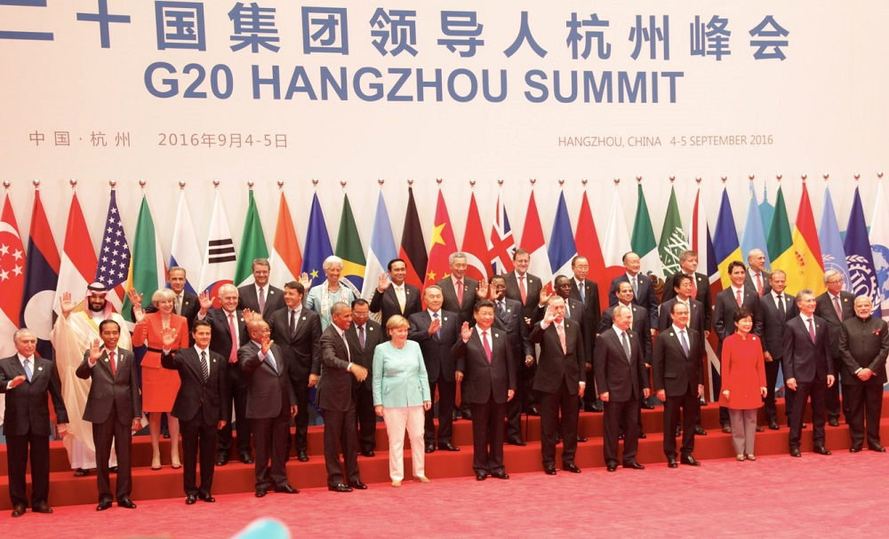
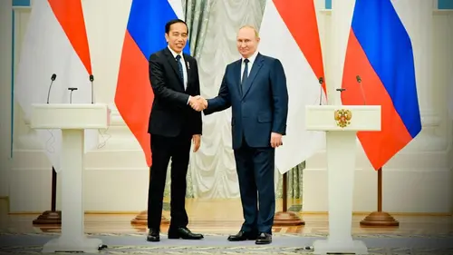
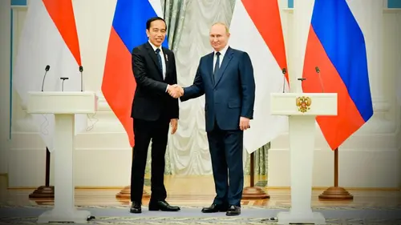

 

Kerja sama internasional adalah bentuk hubungan yang terjalin antara dua negara atau lebih dengan tujuan untuk mencapai manfaat bersama, saling mendukung, dan memberikan solusi atas berbagai tantangan yang dihadapi. Sebagai negara kepulauan terbesar di dunia yang memiliki kekayaan sumber daya alam melimpah, keberagaman budaya, dan posisi geografis yang strategis, Indonesia memainkan peran penting dalam peta hubungan internasional. Kerja sama ini tidak hanya menjadi upaya untuk memenuhi kepentingan nasional tetapi juga untuk berkontribusi pada stabilitas global, perdamaian, dan pembangunan berkelanjutan.
Indonesia secara aktif menjalin hubungan dengan berbagai negara melalui kerja sama bilateral, regional, maupun multilateral. Kerja sama internasional juga memberikan peluang besar bagi Indonesia untuk meningkatkan daya saing di era globalisasi. Melalui hubungan ini, Indonesia dapat memperluas akses pasar internasional, mendatangkan investasi asing, memperkuat transfer teknologi, dan memperbaiki kualitas sumber daya manusia melalui program pendidikan lintas negara. Tantangan global yang kompleks, seperti pandemi, degradasi lingkungan, konflik internasional, dan ketimpangan sosial, tidak mungkin diselesaikan sendiri oleh satu negara. Oleh karena itu, kerja sama yang solid dengan negara-negara lain menjadi sangat penting agar Indonesia mampu menghadapi dinamika tersebut secara efektif.
Dengan berpegang teguh pada prinsip politik luar negeri "Bebas dan Aktif," Indonesia berusaha untuk tetap netral, tidak memihak kekuatan besar, dan memanfaatkan kebijakan luar negeri untuk memperjuangkan kepentingan rakyatnya. Melalui kerja sama yang inklusif dan berbasis nilai saling menghormati, Indonesia tidak hanya memperkuat posisinya di kancah global tetapi juga memastikan pembangunan yang berkelanjutan dan inklusif bagi seluruh lapisan masyarakat. Ini menunjukkan bahwa kerja sama internasional adalah elemen strategis dalam mendukung kemajuan bangsa sekaligus memberikan kontribusi positif pada keseimbangan dunia.